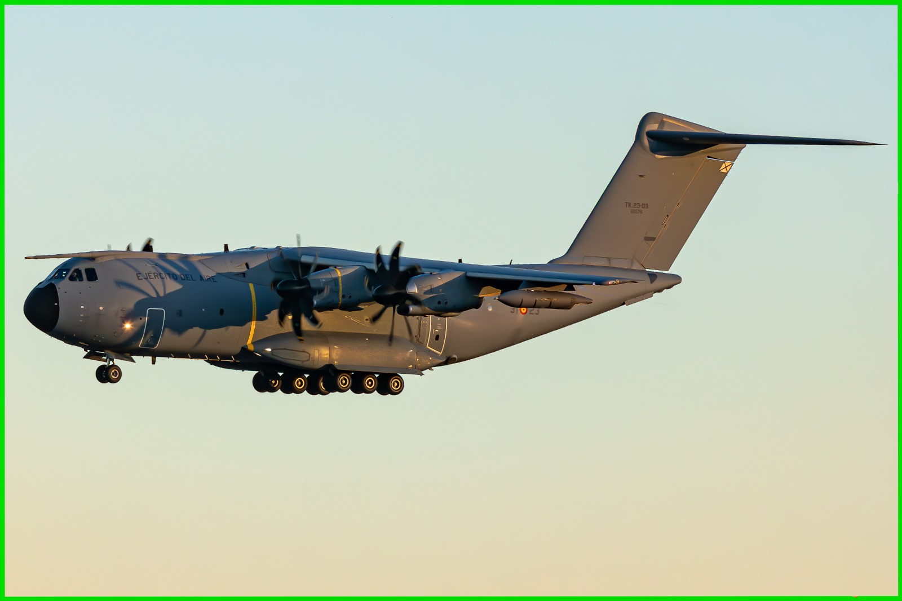
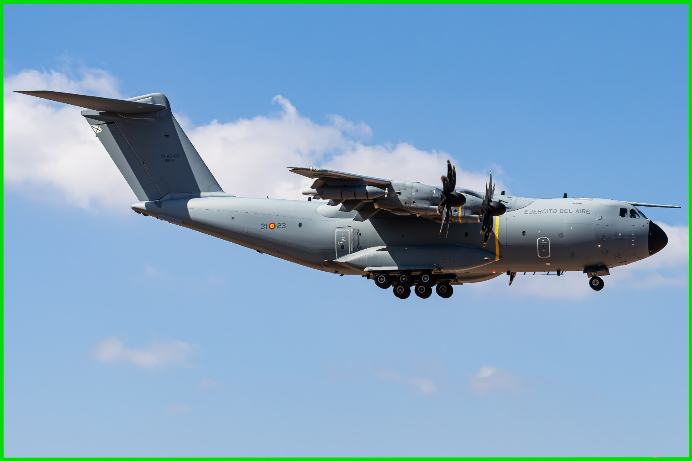
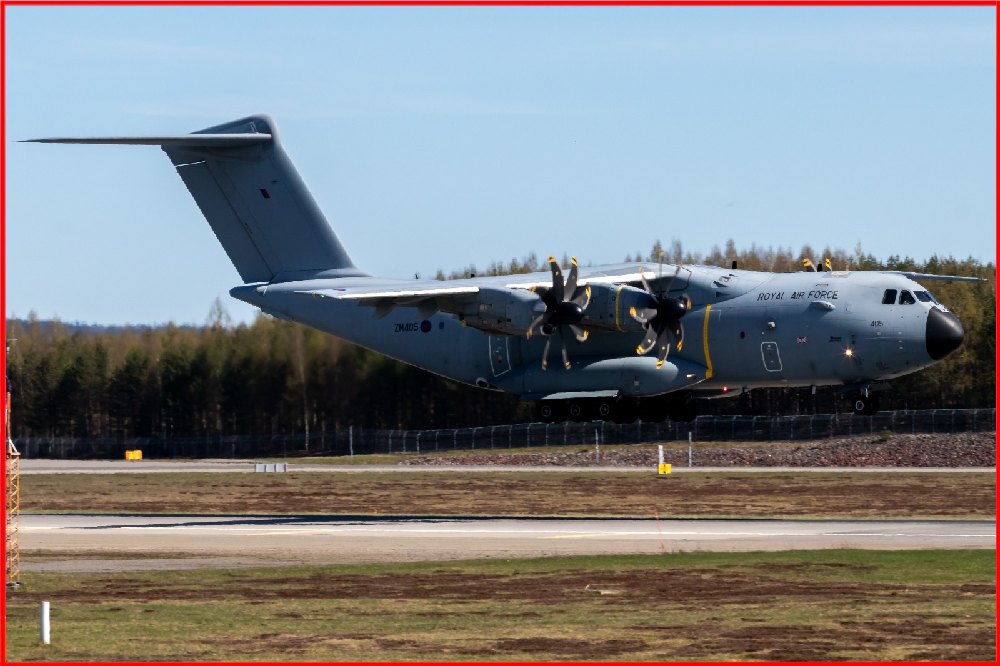

Photo Submission Guidelines Linee Guida per l'Invio delle Foto
Volio Spotter — Volio App S.r.l.
Last updated / Ultimo aggiornamento: 5 September 2026 / 5 settembre 2026
This page is available in English and Italian. In case of any discrepancy between the two versions, the English version shall prevail. Questa pagina è disponibile in inglese e in italiano. In caso di discrepanza tra le due versioni, prevale la versione in inglese.
Every photo uploaded to Volio Spotter is submitted for review. A Volio Spotter Moderator checks that these guidelines are respected before the photo is published. To be accepted, a photo must meet all of the requirements below.
Ogni foto caricata su Volio Spotter viene inviata per revisione. Un Moderatore Spotter di Volio verifica che queste linee guida siano rispettate prima che la foto venga pubblicata. Per essere accettata, una foto deve soddisfare tutti i requisiti indicati di seguito.
1. Exposure
The photo must be properly exposed and clearly visible.
Avoid images that are too dark or too bright.
Important details should not be lost in shadows or highlights.
✓ Accepted
Correct exposure: the livery, the markings and the details of the aircraft are all clearly readable.
✕ Rejected
Underexposed: the image is too dark and the details fall into the shadows.
✕ Rejected
Overexposed: the highlights are burnt out and the detail on the fuselage is lost.
1. Esposizione
La foto deve essere correttamente esposta e chiaramente visibile.
Evita immagini troppo scure o troppo chiare.
I dettagli importanti non devono andare persi nelle ombre o nelle alte luci.
✓ Accettata
Esposizione corretta: livrea, scritte e dettagli dell'aeromobile sono tutti chiaramente leggibili.
✕ Rifiutata
Sottoesposta: l'immagine è troppo scura e i dettagli si perdono nelle ombre.
✕ Rifiutata
Sovraesposta: le alte luci sono bruciate e il dettaglio sulla fusoliera è perso.
2. Backlighting
The photo must not be shot against the light in a way that compromises the subject.
Avoid strong backlighting that turns the aircraft into a silhouette.
Livery, registration and the main details of the aircraft must remain visible.
Avoid heavy lens flare, haze or glare across the subject.

✓ Accepted
The sun is behind the photographer: the side of the aircraft and the tail are fully lit and every detail is readable.

✓ Accepted
The tail is fully lit — a clear sign that the aircraft is not backlit.

✕ Rejected
The tail and part of the airframe are in the shade: the light comes from behind the subject and the photo looks flat.
Tip: use the tail to tell whether the aircraft is backlit or not. If the tail is in the shade, the photo will be rejected. This does not apply to night shots or deliberate "no light" shots.
2. Controluce
La foto non deve essere scattata in controluce in modo tale da compromettere il soggetto.
Evita controluce marcati che riducono l'aeromobile a una silhouette.
Livrea, immatricolazione e dettagli principali dell'aeromobile devono restare visibili.
Evita flare, foschia o riflessi eccessivi sul soggetto.
✓ Accettata
Il sole è alle spalle del fotografo: la fiancata e la deriva sono completamente illuminate e ogni dettaglio è leggibile.
✓ Accettata
La deriva è completamente illuminata: segno evidente che l'aeromobile non è in controluce.
✕ Rifiutata
La deriva e parte della cellula sono in ombra: la luce arriva da dietro il soggetto e la foto risulta piatta.
Consiglio: usa la deriva (la coda) per capire se l'aeromobile è in controluce. Se la deriva è in ombra, la foto verrà rifiutata. Non vale per gli scatti notturni o per gli scatti volutamente "senza luce".
3. Centering & Composition
The main subject should be properly centered and well composed.
Avoid excessive empty space.
The subject should be clearly visible and intentionally framed.
✓ Accepted
The aircraft sits on the centre of the frame, with balanced space on all four sides.
✕ Rejected
The subject is too high in the frame and the nose is cut short of the edge, leaving a large empty foreground.
✕ Rejected
The subject is pushed to the left and upwards: too much empty ground at the bottom, too little space in front of the nose.
The red lines mark the centre of the frame — they are shown here for reference only and must not appear in the photo you submit.
3. Centratura e composizione
Il soggetto principale deve essere correttamente centrato e ben composto.
Evita spazi vuoti eccessivi.
Il soggetto deve essere chiaramente visibile e inquadrato in modo intenzionale.
✓ Accettata
L'aeromobile è al centro dell'inquadratura, con spazio equilibrato su tutti e quattro i lati.
✕ Rifiutata
Il soggetto è troppo in alto e il muso è tagliato vicino al bordo, lasciando un ampio primo piano vuoto.
✕ Rifiutata
Il soggetto è spostato a sinistra e verso l'alto: troppo terreno vuoto in basso, troppo poco spazio davanti al muso.
Le linee rosse indicano il centro dell'inquadratura: sono mostrate solo come riferimento e non devono comparire nella foto che invii.
4. Horizon
The horizon must be straight and level.
Avoid noticeably tilted horizons.
If the horizon is not naturally visible, the image should still have a balanced and level composition.
Tip: take the horizon from the sea, buildings or poles in the background — not from the aircraft itself, which is often banking or in a nose-up attitude. If the background is sky only, keep a realistic angle for the aircraft.
✓ Accepted
The horizon is level and parallel to the edges of the frame.
✕ Rejected
The horizon is noticeably tilted, and the whole scene looks as if it were sloping.
4. Orizzonte
L'orizzonte deve essere dritto e livellato.
Evita orizzonti visibilmente inclinati.
Se l'orizzonte non è naturalmente visibile, l'immagine deve comunque avere una composizione equilibrata e livellata.
Consiglio: prendi come riferimento per l'orizzonte il mare, gli edifici o i pali sullo sfondo, non l'aeromobile, che spesso è in virata o a muso alto. Se lo sfondo è solo cielo, mantieni un'inclinazione realistica dell'aeromobile.
✓ Accettata
L'orizzonte è livellato e parallelo ai bordi dell'inquadratura.
✕ Rifiutata
L'orizzonte è visibilmente inclinato e l'intera scena sembra in pendenza.
5. Editing
Photos should have a natural and realistic appearance.
Avoid excessive filters, saturation, contrast, sharpening, or other heavy editing.
Minor adjustments to exposure, colour, or cropping are allowed.
✓ Accepted
Natural editing: realistic colours and contrast, no visible filters or halos.
✕ Rejected
Flat and washed out: the image lacks contrast and colour, and the subject does not stand out.
✕ Rejected
Over-edited: excessive saturation, contrast and sharpening give the image an unrealistic look.
5. Post-produzione
Le foto devono avere un aspetto naturale e realistico.
Evita filtri eccessivi, saturazione, contrasto, nitidezza o altre modifiche pesanti.
Sono ammesse piccole regolazioni di esposizione, colore o ritaglio.
✓ Accettata
Post-produzione naturale: colori e contrasto realistici, nessun filtro o alone visibile.
✕ Rifiutata
Piatta e slavata: all'immagine mancano contrasto e colore e il soggetto non risalta.
✕ Rifiutata
Post-produzione eccessiva: saturazione, contrasto e nitidezza esagerati rendono l'immagine irrealistica.
6. No AI-Generated Content
Photos must be original photographs and must not be AI-generated or AI-manipulated.
Do not submit fully AI-generated images.
Do not use AI to add, remove, or significantly alter elements of the photograph.
Important: submissions found to be AI-generated or AI-manipulated will be rejected.
6. Nessun contenuto generato con IA
Le foto devono essere fotografie originali e non devono essere generate o manipolate con l'intelligenza artificiale.
Non inviare immagini interamente generate con IA.
Non utilizzare l'IA per aggiungere, rimuovere o alterare in modo significativo elementi della fotografia.
Importante: gli invii che risultino generati o manipolati con IA verranno rifiutati.
7. Aspect Ratio
All photos must be submitted in a 3:2 aspect ratio.
3:2 — accepted
4:3 — rejected
1:1 — rejected
Accepted: 3:2 (e.g. 3000 × 2000 px, horizontal or vertical).
Photos with other aspect ratios may be rejected.
7. Formato (rapporto d'aspetto)
Tutte le foto devono essere inviate in formato 3:2.
3:2 — accettato
4:3 — rifiutato
1:1 — rifiutato
Accettato: 3:2 (es. 3000 × 2000 px, orizzontale o verticale).
Le foto con altri rapporti d'aspetto possono essere rifiutate.
How the review works
You upload your photo through the Application.
The photo enters the review queue and is not yet visible to other users.
A Volio Spotter Moderator checks the photo against these guidelines.
If the guidelines are respected, the photo is published. If not, it is rejected and you can submit a corrected version.
Review times may vary depending on the number of submissions. Rejection is never a judgement of your work as a photographer — it only means that a specific requirement above was not met.
Come funziona la revisione
Carichi la tua foto tramite l'Applicazione.
La foto entra nella coda di revisione e non è ancora visibile agli altri utenti.
Un Moderatore Spotter di Volio verifica la foto rispetto a queste linee guida.
Se le linee guida sono rispettate, la foto viene pubblicata. In caso contrario viene rifiutata e puoi inviare una versione corretta.
I tempi di revisione possono variare in base al numero di invii. Il rifiuto non è mai un giudizio sul tuo lavoro come fotografo: significa soltanto che uno dei requisiti sopra indicati non è stato soddisfatto.
Quick checklist before uploading
The photo is correctly exposed and clearly visible.
The photo is not shot against the light in a way that hides the subject.
The subject is centred, well framed and clearly recognisable.
The horizon is straight, or the composition is level and balanced.
The editing is natural, with no heavy filters or effects.
The photo is an original photograph, not AI-generated or AI-manipulated.
The photo is in a 3:2 aspect ratio.
Checklist rapida prima di caricare
La foto è correttamente esposta e chiaramente visibile.
La foto non è in controluce al punto da nascondere il soggetto.
Il soggetto è centrato, ben inquadrato e chiaramente riconoscibile.
L'orizzonte è dritto, oppure la composizione è livellata ed equilibrata.
La post-produzione è naturale, senza filtri o effetti pesanti.
La foto è una fotografia originale, non generata né manipolata con IA.